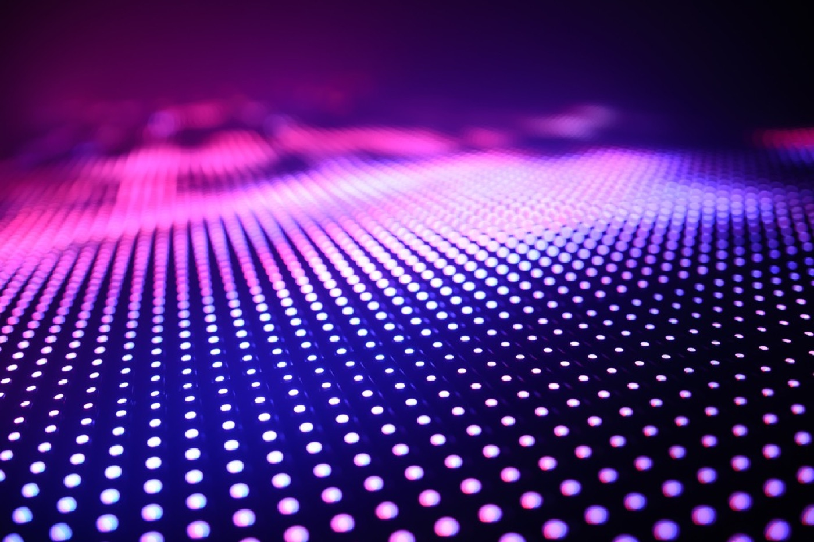
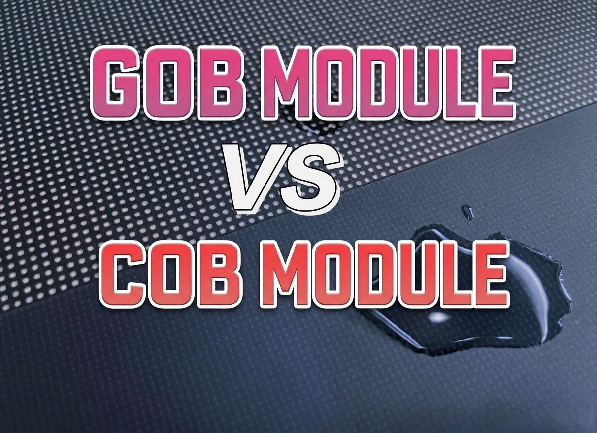

By David
Which LED encapsulation should you choose? Choose COB for premium fine-pitch indoor and rental displays where a smooth, protected, seamless surface matters most. Choose SMD for proven, economical panels with the widest supply base and simple, low-cost module replacement. Choose GOB when you want SMD-style pricing with a rugged, glue-sealed surface for harsh, humid, or high-touch environments. This cob vs smd vs gob comparison covers the real trade-offs in outdoor durability, cost, and maintainability, and gives a clear decision path for each project type.
Every LED display is built from the same raw parts: LED lamps, a driver circuit, and a module board. What changes between COB, SMD, and GOB is how the lamps are protected on that board. That single decision shapes how the display survives weather, how much it costs, and how easily it is repaired. Buyers who understand the three methods make better decisions than buyers who compare pixel pitch alone.
This guide is written for technical buyers, integrators, and distributors who must specify a display and answer to the end client. This LED encapsulation comparison weighs COB, SMD, and GOB on the three points that decide a project: outdoor durability, cost, and maintainability. It avoids parameter dumping and instead maps each method to the projects it suits.
SMD stands for surface-mount device. The LED lamps are packaged individually and then soldered onto the front of the module board. The lamps sit on the surface, so the module is bright and proven, but the solder joints and lamps are exposed to touch and moisture.
COB stands for chip on board. The LED chips are bonded directly to the board and covered with a protective layer, so the surface is smooth and sealed. A COB LED panel protects the chips from contact and moisture, which gives a seamless look and a tougher face.
GOB stands for glue on board. It begins as a standard SMD module and then adds a clear potting layer over the lamps. The glue seals the surface, so a GOB LED display keeps SMD-level cost and supply while gaining protection against moisture, dust, and impact.
| Method | How It Is Built | Where It Fits |
|---|---|---|
| SMD | Individual lamps soldered on the module surface | Indoor and outdoor panels, the volume standard |
| COB | LED chips bonded to the board under a protective layer | Fine pitch indoor, rental, premium seamless walls |
| GOB | SMD module sealed under a clear potting layer | Harsh, humid, high-touch, and outdoor-adjacent use |
| Aspect | COB | SMD | GOB |
|---|---|---|---|
| Surface protection | Sealed and smooth | Exposed lamps | Sealed by glue layer |
| Outdoor durability | Strong, moisture resistant | Weaker, exposed joints | Strong, impact resistant |
| Image smoothness | Best, near seamless | Good, visible lamp matrix | Good, slight glue sheen |
| Repair method | Replace module | Replace lamp or module | Replace module |
| Relative cost | Highest | Lowest | Moderate |
| Best-fit projects | Fine pitch, rental, premium indoor | Volume indoor and outdoor | Rugged, humid, high-touch sites |

The outdoors is hard on a display. Rain, humidity, dust, salt air, and temperature swings attack the module face. On an SMD module, the lamps and solder joints sit on the surface, so moisture reaches the joints and corrosion begins. The failure is gradual but certain in wet or coastal sites.
GOB answers this directly. The potting layer covers the lamps and the joints, so water and dust cannot reach them. That is why a GOB LED display suits humid climates, seaside sites, and installations where the face may be touched or hit.

COB answers it differently. Because the chips are bonded to the board and covered by a protective layer, there are no exposed solder joints to corrode, and the surface is easy to clean. For a coastal fine-pitch installation, a COB panel often survives better than SMD and looks smoother at the same time.
The practical rule is simple. For a wet, humid, or high-contact environment, choose GOB or COB over standard SMD. For a dry, sheltered indoor wall, SMD remains perfectly adequate and costs the least.

SMD is the most economical and the most widely available. Because the supply base is deep, modules and spares are easy to source and competition keeps the price low. For a large volume project where budget decides the order, SMD is hard to beat and is the reason so many panels already in the field are SMD.
GOB sits in the middle. It begins as an SMD module and adds a potting step, so it costs somewhat more than plain SMD but generally less than COB at the same pitch. The buyer pays a modest premium for a large gain in durability.
COB carries the highest unit cost, because the manufacturing process and the fine-pitch capability are more demanding. COB is also what makes very fine pitch practical, so the cost premium buys resolution and surface protection that SMD cannot match at the same pixel density.
The trap is comparing sticker price alone. A cheap SMD panel that fails early in a coastal site costs more over its life than a GOB panel that simply keeps running. The right comparison is total cost of ownership, not the quotation line.
Maintenance is where buyers are most often surprised. On an SMD module, a single dead lamp can be repaired at the lamp level in some cases, which is a low-cost fix. That repair advantage is real and is why SMD still dominates the volume market.
On COB and GOB, the surface is sealed. A lamp-level repair is not practical because the protective layer or the glue must be broken to reach the chip. Maintenance is handled by replacing the whole module, which is fast and clean but means the spare is a module rather than a lamp.
That difference matters most in remote sites. A module-level swap is simple for any technician to perform, while a lamp-level repair needs a more skilled hand and a soldering station. Buyers who cannot guarantee skilled service on site may actually prefer the module-swap model of COB and GOB.
The lesson is to match the maintenance model to the site. High-volume, serviced, cost-sensitive projects lean SMD. Remote, harsh, or premium projects lean GOB and COB, where a quick module swap keeps downtime short and the workshop does the delicate work.
It is easy to treat SMD as old technology, but that is a mistake. SMD is the volume standard for a reason: it is proven, flexible across indoor and outdoor use, cheap to service at the lamp level, and supported by the deepest supply chain in the industry. Most displays in the field today are SMD.
SMD also scales. A single platform covers a wide range of pitches and applications, so an integrator can standardise on SMD for a mixed portfolio and keep one spare kit. That operational simplicity has real value in a large rollout.
Choose SMD when the environment is controlled or sheltered, when budget is the deciding factor, when lamp-level service matters, and when the project needs fast availability from many suppliers. Review the indoor and outdoor S Series displays as a starting point for a volume SMD rollout.
COB is chosen when resolution and surface quality lead. Because the chips are bonded to the board without individual lamp packages, the pixels sit closer together and the surface is smoother, so a fine-pitch COB LED panel shows images with less of the visible lamp matrix that SMD can reveal at close range.
The sealed surface is the second advantage. There are no exposed joints to corrode and the face can be wiped clean, which suits control rooms, studios, boardrooms, and premium retail where the display is seen up close and must look flawless.
COB also suits rental, because the protected surface resists the knocks, handling, and constant assembly of touring. COB P0.93 is in volume production today, which shows how far fine pitch COB has moved from a laboratory curiosity to a deliverable product. Compare the fine-pitch options on the COB EF series page.
GOB is the pragmatic choice for many real sites. It delivers most of the durability of COB at a price closer to SMD, because it starts from the SMD supply base and adds a protective layer. For buyers who want protection without paying the full fine-pitch premium, GOB is often the sweet spot.

The glue layer does more than seal. It adds a degree of impact resistance, so a GOB module survives a stray ball, a cleaning brush, or the accidental contact that would mark an SMD face. That makes GOB attractive for sports venues, transport hubs, retail windows, and any public installation where the display is within reach.
GOB has trade-offs. The glue layer can add a slight sheen that softens very fine detail, so it is not the first choice for the closest-viewed fine-pitch work where COB leads. For mid-pitch indoor and outdoor-adjacent projects, however, GOB is frequently the best value per year of service.
The honest answer is that no single method wins everywhere. The right choice follows the project, not a preference for one kind of technology. Three questions decide it: where will the display live, how close will people stand, and who will service it?
If the display faces weather, humidity, or public contact, lean GOB or COB. If it lives indoors in a controlled space, SMD is usually enough. If it is viewed from a metre or two and must look seamless, lean COB. If it must be cheap to service at the lamp level and available fast, lean SMD.
| Project | Recommended | Why |
|---|---|---|
| Sheltered indoor signage | SMD | Lowest cost, proven, lamp-serviceable |
| Fine-pitch control room | COB | Seamless face, close-view clarity |
| Humid or coastal outdoor | GOB or COB | Sealed surface resists moisture |
| Rental and touring | COB | Protected face survives handling |
| High-touch public venue | GOB | Impact and moisture resistance |
| Tight-budget volume rollout | SMD | Deep supply base, fast availability |
Read the table as a starting point, then confirm the details for the site. A coastal control room, for example, combines two needs and may justify COB rather than GOB. The project, not the table, has the final word.
Whichever method you choose, the specification should state the environment, the pixel pitch, the viewing distance, the brightness, the service model, and the warranty. These points decide whether the display performs once it is installed, beyond the choice of COB, SMD, or GOB.
A supplier who builds all three methods can advise without bias, because the recommendation is not tied to a single production line. Ask the supplier to justify the recommendation against your environment and service plan, not against a preferred material.
The first mistake is choosing on price alone and ignoring the environment. A cheap SMD panel in a humid or coastal site will cost more in replacement than a GOB panel that lasts. The second mistake is choosing fine pitch without checking the viewing distance, which pays for resolution no one will see.
The third mistake is ignoring the service model. A sealed COB or GOB panel needs module spares and a plan for swaps, while SMD may allow lamp-level repair. Buyers who do not match the spare kit to the method are left waiting for parts when a display fails.
The fourth mistake is treating the three methods as competitors to be ranked. They are tools for different jobs. A portfolio that uses SMD, GOB, and COB where each fits will outperform one that forces a single method onto every project.
Asia Vision is a B2B LED display manufacturer based in Shenzhen. We build SMD, GOB, and COB, so a buyer can get an honest recommendation rather than a push toward the single line we happen to run. Our COB capability runs across twelve COB production lines, and COB P0.93 is in volume production.
Beyond the modules, we handle cabinet customisation, ageing tests, quality control, and export delivery, so the display leaves the factory ready for the site. Every unit carries a two-year warranty and support with a 24-hour response, and our teams serve buyers across the Middle East, Europe, North America, Latin America, and Southeast Asia. See how the process works on the factory page.
COB, SMD, and GOB are three ways to protect the same LED lamps, and each trades cost against durability and maintenance in a different way. SMD is the economical volume standard; GOB adds a sealed, rugged surface at a moderate premium; COB delivers the finest pitch and the smoothest, protected face.
Choose by the project. Match the method to the environment, the viewing distance, and the service plan, then specify the pitch, brightness, and warranty around it. Buyers who make the encapsulation decision deliberately get a display that fits the site and lasts, instead of one that was chosen on price and then replaced.
Tell us your project, environment, and viewing distance, and we will recommend the encapsulation that fits and specify it for your site.
Request Encapsulation AdviceChat on WhatsApp